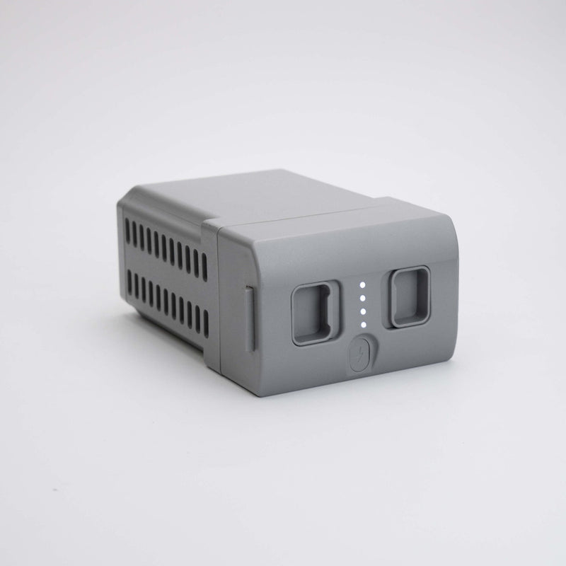

In breve. Il G1 riceve gli aggiornamenti software via rete (OTA). Il punto di partenza è l'app ufficiale Unitree Explore collegata al robot. Prima di iniziare controlla batteria, versione attuale e collegamento; durante l'aggiornamento non spegnere il robot. Un ritorno alla versione precedente non è documentato da Unitree.
Questa guida spiega come affrontare l'aggiornamento firmware del Unitree G1 restando dentro quello che Unitree documenta: la scheda ufficiale del G1, il manuale utente, l'app Unitree Explore e il centro di assistenza support.unitree.com. Niente pacchetti presi da forum o comandi improvvisati: un aggiornamento fatto male può lasciare il robot in uno stato che richiede assistenza.
Cosa dice Unitree sull'aggiornamento firmware del G1
Nella tabella delle specifiche il G1 e il G1 EDU riportano entrambi la voce Upgraded Intelligent OTA: il software del robot si aggiorna via rete, senza interventi sull'hardware. Il manuale utente, tra i controlli da fare prima dell'accensione, chiede di verificare che il firmware sia all'ultima versione: «Ensure that the firmware has been updated to the latest version».
Il collegamento tra telefono e robot passa dall'app Unitree Explore, scaricabile per iOS e Android dalla pagina Unitree Explore APP Download. L'app mostra lo stato del robot in tempo reale (temperatura, allarmi e altri dati), utile per controllare che la macchina sia in condizioni normali prima di procedere. Consulta il centro di assistenza Unitree per novità e note di rilascio della tua versione.
I passi, in ordine
- Installa l'app e collega il robot. Alla prima connessione il manuale chiede di registrare un account, attivare il Bluetooth del telefono e tenerlo vicino al G1, poi di aggiungere il robot con «Add Robot».
- Scegli la modalità di collegamento. Il manuale prevede due modalità: AP (il telefono si collega all'hotspot del robot) oppure Wi-Fi tramite router. La procedura è anche nel video «Adding G1 & Network setting» della pagina dell'app.
- Controlla stato e versione. Prima di aggiornare guarda nell'app che non ci siano allarmi attivi e annota la versione firmware attuale.
- Avvia l'aggiornamento e aspetta. Segui le indicazioni che l'app mostra per il tuo robot e non interrompere alimentazione o collegamento finché l'operazione non è conclusa.
Prima di aggiornare: batteria, versione, rete
- Batteria. Il manuale non indica una soglia minima di carica per l'aggiornamento. Per prudenza parti con la batteria carica: la batteria del G1 dura circa 2 ore secondo Unitree e un aggiornamento interrotto è peggio di uno rimandato.
- Versione. Annota la versione firmware attuale. Serve a capire se l'aggiornamento è davvero necessario e, in caso di problemi, a dare all'assistenza un'informazione precisa.
- Rete. Il manuale sconsiglia gli ambienti con interferenze Wi-Fi e, in modalità AP, chiede che il nome dell'hotspot non contenga simboli speciali o spazi. Tieni telefono e robot vicini. Se lavori sul G1 EDU con la rete interna 192.168.123.x, la guida all'accensione e alla rete del G1 spiega come è organizzata.
Dopo l'aggiornamento: allarmi e calibrazione
Nella sezione G1 Developer FAQ del centro di assistenza Unitree è descritto un caso specifico: dopo l'aggiornamento al firmware 1.3.0 o successivo il robot può segnalare Joint limit abnormal e Transient Over Voltage. Secondo Unitree il nuovo firmware rende più precisa la calibrazione dei giunti, quindi la calibrazione precedente non soddisfa più i requisiti e va rifatta.
La calibrazione si fa dall'app: la funzione di calibrazione assistita ricalibra i giunti motore e l'IMU. Nel manuale il percorso è [Settings] → [Data] → [Robot] → [Calibration]; nelle versioni più recenti dell'app il menu può cambiare.
Attenzione. Il manuale ricorda che il G1 esce dalla fabbrica già calibrato e che non va ricalibrato durante l'uso normale. Se dopo un aggiornamento compare un allarme, prima di ricalibrare chiedi conferma all'assistenza tecnica.
Cosa non fare
- Non spegnere il robot e non chiudere il collegamento durante l'aggiornamento.
- Non aggiornare con batteria quasi scarica o con una rete instabile.
- Non usare pacchetti firmware non ufficiali: gli aggiornamenti arrivano solo dai canali Unitree.
- Non ricalibrare "per sicurezza": la calibrazione si rifà solo quando serve, come nel caso del firmware 1.3.0, e dopo aver sentito l'assistenza.
- Non partire senza conoscere la versione firmware attuale.
Si può tornare a una versione precedente?
Per il firmware del G1 Unitree non pubblica una procedura di downgrade nei documenti consultati (manuale utente, pagina dell'app, FAQ per sviluppatori). Non è quindi un'operazione da tentare da soli. Se un aggiornamento crea problemi, il primo contatto è Abra Robotics, che fa parte della filiera Unitree Italia; il manuale indica anche l'assistenza tecnica Unitree (support@unitree.cc) e il portale del servizio clienti Unitree.
Domande frequenti
Come si aggiorna il firmware del Unitree G1?
Il G1 supporta l'aggiornamento OTA via rete. Si parte dall'app ufficiale Unitree Explore collegata al robot, dopo aver controllato batteria, versione attuale e rete, e senza spegnere il robot finché l'aggiornamento non è concluso.
Dove trovo le novità e le note di rilascio del firmware?
Consulta il centro di assistenza Unitree (support.unitree.com) per novità e note di rilascio.
Posso tornare a una versione firmware precedente?
Non è documentato da Unitree. Se un aggiornamento crea problemi, contatta l'assistenza invece di tentare un downgrade da solo.
Dopo l'aggiornamento il G1 segnala «Joint limit abnormal» o «Transient Over Voltage»: cosa fare?
Secondo le FAQ per sviluppatori di Unitree, con il firmware 1.3.0 o successivo la calibrazione dei giunti è cambiata e quella precedente va rifatta dall'app. Prima di ricalibrare chiedi conferma all'assistenza tecnica.
Posso spegnere il robot durante l'aggiornamento?
No. Non interrompere alimentazione e collegamento finché l'aggiornamento non è concluso.
Per l'uso quotidiano del robot la guida operativa del G1 copre accensione, telecomando e comandi di sicurezza. Chi sviluppa sul G1 EDU trova SDK e ROS 2 nella guida alla programmazione; le differenze tra le versioni sono in quale G1 scegliere. Le configurazioni con i prezzi sono nella pagina Unitree G1 e nella scheda G1 EDU U1; se ti serve una seconda batteria per non restare a secco durante le prove, c'è la batteria G1. Tutta la gamma è nella pagina umanoidi.


Fonti
- Unitree G1, scheda ufficiale (voce «Upgraded Intelligent OTA», autonomia, garanzia)
- Unitree Explore APP Download: app ufficiale, funzioni e video tutorial del G1
- Unitree G1 User Manual (controlli prima dell'accensione, collegamento all'app, calibrazione)
- Unitree Document Center, G1 Developer FAQ
- Unitree, portale del servizio clienti